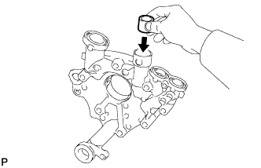
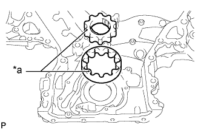
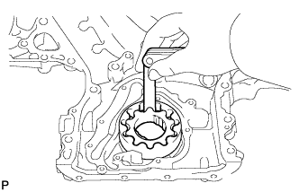
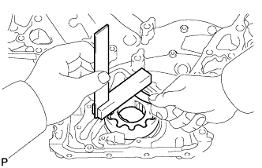
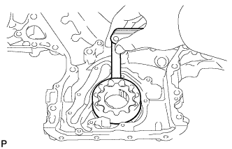

МАСЛЯНЫЙ НАСОС > ПРОВЕРКА |
| 1. ПРОВЕРЬТЕ ПЕРЕПУСКНОЙ КЛАПАН МАСЛЯНОГО НАСОСА |
|  |
Смажьте клапан моторным маслом и убедитесь, что он свободно опускается в гнездо под действием собственного веса.
Если клапан не опускается плавно, замените крышку цепного привода газораспределительного механизма в сборе.
| 2. ПРОВЕРЬТЕ СОСТОЯНИЕ ШЕСТЕРЕН МАСЛЯНОГО НАСОСА |
|  |
Установите ведущую и ведомую шестерни в крышку цепи привода ГРМ метками вверх.
| *a | Метка |
Проверьте зазор между вершинами зубьев шестерен.
|  |
С помощью комплекта плоских щупов измерьте зазор между вершинами зубьев ведущей и ведомой шестерен.
Проверьте боковой зазор между шестернями.
|  |
С помощью комплекта плоских щупов и прецизионной поверочной линейки измерьте зазор между шестернями и прецизионной поверочной линейкой.
Проверьте зазор между шестерней и корпусом.
|  |
С помощью комплекта плоских щупов измерьте зазор между ведомой шестерней и корпусом.